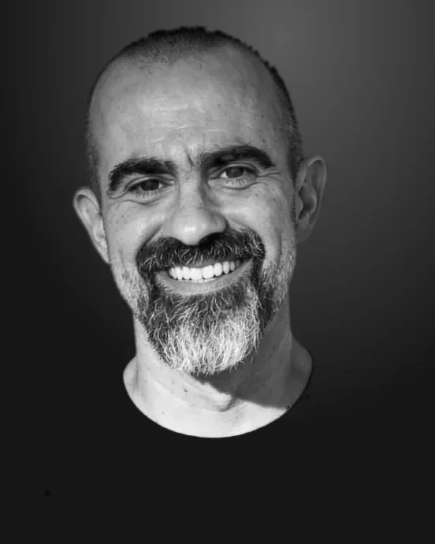
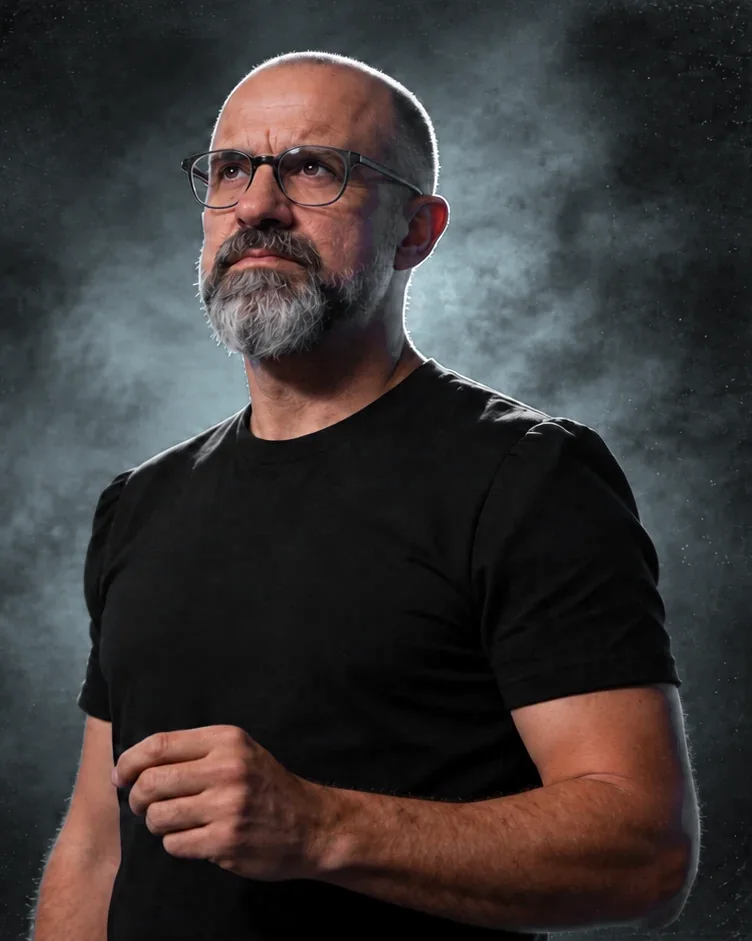

Promovido sem preparo
A pessoa é promovida porque é boa no que faz e, de repente, precisa liderar um time sem nunca ter aprendido a liderar.
EHaF · Escola de Habilidades do Futuro, by IGT International Coaching
Só existe uma primeira turma.
Black Friday · Turma Fundadora
Na Turma Fundadora, você coloca no currículo um título em liderança que o mercado reconhece, com o melhor preço que este MBA vai ter e isenção da taxa de matrícula.
Turma Fundadora: R$ 4.990 ou 12x de R$ 498,02, com isenção da taxa de matrícula. As próximas turmas vão custar R$ 10.990.
Fonte: levantamento do Insper publicado em O Globo e InfoMoney, junho de 2025.
Muita gente lidera bem, mas não tem nada no currículo que mostre isso, e continua no mesmo cargo mesmo fazendo um bom trabalho.
Este MBA coloca no seu currículo uma pós-graduação com diploma da Faculdade Sirius, nota máxima no MEC, construída sobre a metodologia de liderança que o Geronimo Theml desenvolveu em mais de 28 anos treinando pessoas.
Até hoje, tudo o que ele ensinou foi em cursos livres. Pela primeira vez, esse método vem com um diploma de pós-graduação.
E, se você já fez uma formação com o Geronimo, este MBA explica a ciência por trás das ferramentas que você já usa e te dá um título que traz autoridade diante de quem você atende ou lidera.
E, se você ainda não fez nenhum treinamento com o Geronimo, este é o melhor jeito de começar, porque você aprende a ciência e a prática juntas.
Antes de existir este MBA, a EHaF já levava essa metodologia para dentro de empresas e do próprio IGT. Nós treinamos líderes e times e medimos o resultado com quem passou pelos programas.
Tudo o que você acessar neste MBA já foi validado em empresas de verdade.
O que acontece com muita gente
A pessoa é promovida porque é boa no que faz e, de repente, precisa liderar um time sem nunca ter aprendido a liderar.
Só 44% dos gestores receberam algum treinamento formal para liderar.
Fonte: Gallup
70% das empresas promovem gente de dentro para a liderança, mas só uma em cada três tem um programa para preparar esses líderes.
Fonte: Koru, Tendências do RH 2025
Aí a liderança vira improviso. Este MBA foi feito para quem quer trocar o improviso por um método.
Para quem é este MBA
Para graduados, pós-graduados, mestres e doutores que querem liderar a si mesmos e liderar pessoas.
E serve para qualquer área:
Quem lidera. E liderar fica mais fácil quando você sabe como as pessoas pensam e decidem.
Reage à pressão no calor do momento.
Entende como o próprio cérebro reage à pressão e decide com a cabeça no lugar.
Tenta convencer na força do cargo.
Sabe ler as pessoas e faz o time querer seguir na mesma direção, sem precisar impor nada.
Cobra resultado sem saber o que motiva cada pessoa do time.
Sabe o que motiva cada pessoa e usa isso para engajar o time.
Dá feedback quando sobra tempo, do jeito que dá.
Dá feedback com roteiro e acompanha o crescimento de cada um.
Centraliza tudo porque não aprendeu a delegar.
Delega do jeito certo para cada situação.
O que diz o mercado
O Fórum Econômico Mundial ouviu mais de mil empresas e concluiu: liderança foi a habilidade que mais ganhou importância no mercado desde 2023.
Liderança está em alta no mercado, e este MBA nunca vai custar tão pouco quanto agora, na Turma Fundadora.
Fonte: Fórum Econômico Mundial, Future of Jobs Report 2025.
Com o Geronimo: o duro desafio de ser a média, os 4 estágios da competência, o que você veio buscar aqui, os ladrões de insights e o que você vai aprender.
Como o cérebro decide, aprende, cria hábitos, sente e reage à pressão, numa linguagem para quem nunca estudou o tema.

A metodologia de liderança que a EHaF já aplica em empresas, com as ferramentas para liderar pessoas e resultados no dia a dia.
O eixo de Liderança foi construído sobre estes 10 princípios, e cada um vem com as ferramentas para você usar com o seu time.
As aulas vão começar em março de 2027.
São especialistas em neurociência e em liderança, e quem vai abrir o MBA é o Geronimo, com a aula inaugural.
Aula inaugural e aula prática do Ciclo da Realidade
[MINI-BIO]
Neurociência
[MINI-BIO]
Neurociência e Liderança
[MINI-BIO]
Liderança
[MINI-BIO]
Liderança
[MINI-BIO]
Liderança
[MINI-BIO]
As aulas são gravadas e curtas, e você assiste de onde estiver, no horário que funcionar para você: de manhã antes do trabalho, à noite em casa ou no intervalo entre um compromisso e outro. Quando surgir uma dúvida, você leva para os encontros ao vivo.
Assim, você não precisa escolher entre estudar e estar com a sua família, nem entre estudar e trabalhar.
Agora pense no custo de um MBA presencial em outra cidade. Só a passagem de avião, ida e volta, sairia em média por quase R$ 1.300. Com uma noite de hotel e a comida, cada viagem passaria de R$ 1.700. Uma viagem por mês, durante um ano, somaria mais de R$ 20 mil, sem contar a mensalidade e os dias que você deixaria de trabalhar.
Neste MBA, esse custo não existe. Os treinamentos do Geronimo já chegaram a alunos em 32 países, e este MBA foi pensado para chegar também a quem não mora numa capital, com um diploma de peso e sem que a pessoa precise largar a rotina.
Quem entra na Turma Fundadora:
Essa condição é só desta turma e não vai voltar.

Só existe uma primeira turma. E ela é de quem caminhou comigo até aqui.
A Turma Fundadora entra por:
12x de
R$498,02
ou R$ 4.990 à vista
Isenção da taxa de matrícula de R$ 890
Menos do que três viagens de um MBA presencial.
7 dias de garantia
Crédito, Pix e boleto.
Os ensinamentos do Geronimo são preciosos e após os treinamentos realizados com todos os nossos gestores e time estamos transformando pontos da cultura da Next em uma empresa mais madura.
Despertou em nossa equipe a necessidade de melhora [...] percebemos os líderes mais empenhados no crescimento e desenvolvimento.
Indico de olhos fechados o trabalho deles.
Muitos MBAs transmitem muito conteúdo, mas sem uma metodologia para aplicação na prática, de forma lógica.
Líder treinado pela EHaF
Por muitos anos liderei times de forma muito intuitiva, sem método.
Líder treinado pela EHaF
Iniciei no cargo de liderança totalmente despreparada e no 'cego'.
Líder treinado pela EHaF
Nosso time visivelmente está muito mais maduro.
Líder treinado pela EHaF
Pena que não dá pra voltar no tempo e eu ter adquirido o conhecimento uns 20 anos atrás.
Líder treinado pela EHaF
Seguir liderando do jeito que dá, sem método e sem nada no currículo que mostre o que você sabe fazer.
Liderar com método, entender como as pessoas pensam e decidem e colocar no currículo um MBA reconhecido pelo MEC, com o melhor preço que ele vai ter.
Importante
Depois disso, esta condição não volta.
Se, por qualquer motivo, você sentir que este MBA não é para você, basta pedir o reembolso em até 7 dias depois da matrícula, e o seu investimento volta integralmente.
Criada dentro do próprio IGT, a EHaF é a escola que leva a metodologia de liderança criada pelo Geronimo para dentro das empresas.

Idealizador deste MBA, criador da metodologia e fundador da EHaF.
Ex-Advogado da União, deixou a carreira pública para viver o propósito de desenvolver pessoas. Treina pessoas há mais de 28 anos e tem dezenas de milhares de alunos, em 32 países.
É fundador do IGT International Coaching, criador do podcast Sai da Média e autor dos best-sellers Produtividade para Quem Quer Tempo e Assuma o Comando da Sua Vida.
Quem já tem graduação completa. A matrícula exige o diploma de graduação.
Em março de 2027.
Sim. O diploma é da Faculdade Sirius, com nota máxima no MEC. Um MBA é uma formação executiva, com as 360 horas que o MEC exige, e vai para o seu currículo e para o seu LinkedIn.
São 360 horas, 100% online, com aulas gravadas e curtas, que você assiste no seu horário, além disso, há também os encontros ao vivo.
As aulas foram pensadas para caber na sua rotina: são curtas, gravadas e ficam disponíveis para você assistir quando puder.
Não. Este MBA não gira em torno de TCC, tese e monografia. O foco são aulas com dinâmicas para você levar o que aprendeu para o seu dia a dia, e o eixo de Liderança usa a mesma metodologia que a EHaF já aplica em empresas. O seu sucesso no MBA vai depender da sua execução prática.
Você não precisa saber nada de neurociência para começar. O primeiro módulo começa do zero: o que é neurociência e como o seu cérebro funciona. E a linguagem foi pensada para quem nunca estudou o tema.
Se a sua especialização é na parte técnica da sua área, este MBA é no que vem antes do resultado: como o cérebro decide, aprende e reage à pressão, e como liderar a si mesmo e liderar pessoas. E ele foi feito para a prática. Como disse um líder treinado pela EHaF: Muitos MBAs transmitem muito conteúdo, mas sem uma metodologia para aplicação na prática, de forma lógica.
Porque a condição da Turma Fundadora só existe agora. O preço de R$ 4.990 e a isenção da taxa de matrícula valem até 30 de novembro, e as próximas turmas vão custar R$ 10.990.
Crédito, Pix e boleto.
Não. É o melhor preço que este MBA vai ter, e as próximas turmas vão custar R$ 10.990.
Quem se matricular até 23h59 de 24/11 concorre a 1 dos 3 Kindles. Quem se matricular até 23h59 de 25/11 concorre a 1 dos 3 packs de livros assinados pelo Geronimo, e quem entrou no dia 24 concorre aos dois.